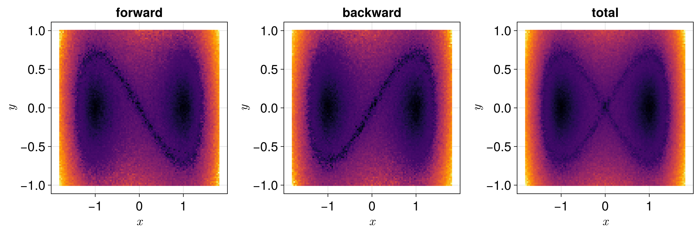
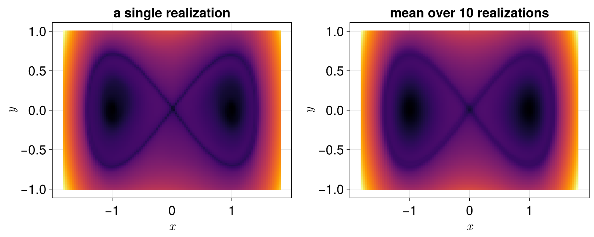

Stochastic Differential Equations
We consider, now, an example of applying the Lagrangian descriptor method to equations of the type SDEProblem.
Duffing equation with additive noise
We consider the Duffing equation with an additive noise in the velocity,
\[\begin{cases} \mathrm{d}x = y \,\mathrm{d}t, \\ \mathrm{d}y = (x - x^3) \,\mathrm{d}t + \sigma \,\mathrm{d}W_t, \end{cases}\]
where $\{W_t\}_t$ is a standard Wiener process and $\sigma$ is the intensity of the noise. Without the noise, the origin is a saddle point, whose stable and unstable manifolds form two homoclinic loops around the centers $(\pm 1, 0)$.
With LagrangianDescriptors.jl, we i) start by setting up the equation as an SDEProblem; next, we ii) wrap that as a LagrangianDescriptorProblem; then we iii) solve it; and finally, we iv) plot the result with the built-in plot recipe.
So we first load the relevant packages:
using StochasticDiffEq
using CairoMakie
using LinearAlgebra: norm
using LagrangianDescriptorsNext we set up the SDEProblem, with the drift f! and the diffusion g!, here a diagonal noise, which is zero in the first component, and a seed for reproducible results:
function f!(du, u, p, t)
x, y = u
du[1] = y
du[2] = x - x^3
end
function g!(du, u, σ, t)
du[1] = 0.0
du[2] = σ
end
σ = 0.05
u0 = [0.0, 0.0]
tspan = (0.0, 5.0)
prob = SDEProblem(f!, g!, u0, tspan, σ; seed = 123)SDEProblem with uType Vector{Float64} and tType Float64. In-place: true
Non-trivial mass matrix: false
timespan: (0.0, 5.0)
u0: 2-element Vector{Float64}:
0.0
0.0With the SDE problem setup, we choose an infinitesimal Lagrangian descriptor, a collection of initial conditions on the phase space, which is the region to be "painted", and finally we build the LagrangianDescriptorProblem. For an SDEProblem, the infinitesimal descriptor has the signature M(du, u, p, t), where du is the value of the drift:
M(du, u, p, t) = norm(du)
uu0 = [[x, y] for y in range(-1.0, 1.0, length = 101), x in range(-1.8, 1.8, length = 101)]
lagprob = LagrangianDescriptorProblem(prob, M, uu0)LagrangianDescriptorProblem for a SDEProblem
initial conditions: 10201 (101 × 101) of type Vector{Float64}
direction: :bothThe Lagrangian descriptors are integrated along with the forward and backward solutions by "solving" the LagrangianDescriptorProblem, with any SDE algorithm of StochasticDiffEq.jl, here the adaptive SOSRI(), for diagonal noise:
lagsol = solve(lagprob, SOSRI())LagrangianDescriptorSolution
initial conditions: 10201 (101 × 101) of type Vector{Float64}
direction: :bothBy default, each initial condition is solved with its own realization of the noise, and the forward and backward directions are driven by independent noise, as for a two-sided Wiener process. We plot the forward and the backward Lagrangian descriptors, and their sum:
fig = Figure(size = (1200, 400))
for (i, direction) in enumerate((:forward, :backward, :total))
ax = Axis(fig[1, i]; title = string(direction), xlabel = L"x", ylabel = L"y")
heatmap!(ax, lagsol, direction)
end
fig
The forward descriptors show the stable manifold of the saddle point, and the backward ones its unstable manifold, as for the deterministic equation, while the noise, independent from one initial condition to the next, makes the pictures slightly grainy.
A single realization of the noise
Following Balibrea-Iniesta et al. (2016), the Lagrangian descriptors of a single realization of the noise are computed with the same noise path for all initial conditions, with the keyword shared_noise = true. With the keyword realizations, the problem is solved for several realizations of the noise, and the solution gives the mean of the descriptors over them:
lagsol_path = solve(lagprob, SOSRI(); shared_noise = true)
lagsol_mean = solve(lagprob, SOSRI(); shared_noise = true, realizations = 10)
fig = Figure(size = (1000, 400))
ax = Axis(fig[1, 1]; title = "a single realization", xlabel = L"x", ylabel = L"y")
heatmap!(ax, lagsol_path)
ax = Axis(fig[1, 2]; title = "mean over 10 realizations", xlabel = L"x", ylabel = L"y")
heatmap!(ax, lagsol_mean)
fig
For a single realization, the saddle point and the homoclinic loops are slightly moved and deformed by the noise, differently in each realization. Their mean shows the structures shared by the realizations.
See also the Stochastic Duffing equation example, with a multiplicative noise that keeps the saddle point in place, and the descriptor of Balibrea-Iniesta et al. (2016), given by the increments of the solutions, available as IncrementDescriptor.